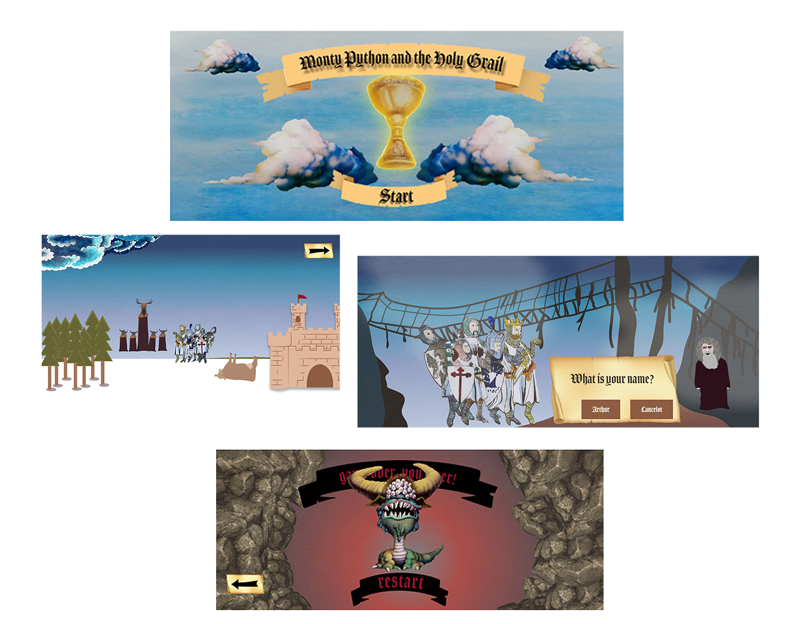

"Monty Python and the Holy Grail"
A short description of the assignment
To create a digital, interactive poster for one of ten possible movies. We chose to make a poster for "Monty Python and the Holy Grail". The goal of our production was to evoke an interest for watching the movies within young adults. We had to consider our target group and what they might find inspiring while also have the artistic style of the movie in mind.
The interactive poster had to have three distinctly different “stages”:
Stage 1:
The poster’s default design that the user sees when the poster is first encountered. The design had to lead the user’s attention to engage in the interactive part which is…
Stage 2:
The interactive part had to include some game-like activities. They could be some kind of animations that the user can click.
Stage 3:
The movie poster “after the user has done the interactive part”. In this final stage we needed a “call to action”, guiding the users where and when they can actually see the movie.

My role
My role in this project was related to different parts of the design. I created the personas collage, "the bridge background and the old man" and some small details like arrows and buttons. Based on this vector image of the old man I created the gif and the spritesheet for the sprite animation. My final part of the project was to generate the pseudo code.
The coding part
In the creation of the interactive poster we used HTML5 and CSS3. To make our poster interactive we used Javascript for elements like buttons and all the moving elements (excluding the sprite animation, which was made by CSS keyframes). The main purpose of Javascript was to provoke a certain action when a click is triggered and we have a lot of these actions in our interactive poster.